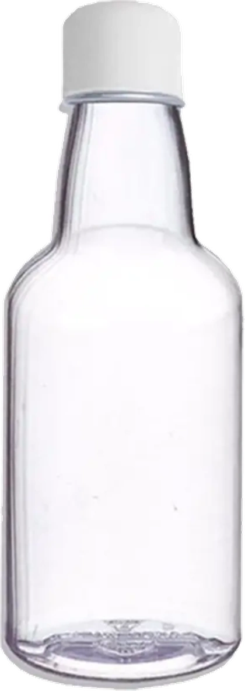
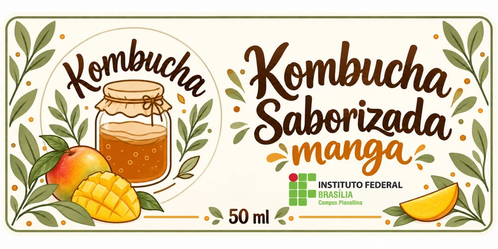

Semana Nacional de Ciência e Tecnologia · IFB
Ciência que
fermenta
sabores.
Kombucha de chá verde com frutas tropicais. Pesquisa sobre a composição físico-química e a microbiota cultivável das formulações.
Instituto Federal de Brasília · Campus Planaltina


Kombucha · GoiabaChá verde · saborização tropicalRótulo provisório
Arraste para girar · selecione um tratamento
Explore os cinco tratamentos
01 / 05Pesquisa e inovação
Delineamento e
objetivo do estudo
O estudo compara cinco formulações de kombucha de chá verde saborizadas com sucos de polpas tropicais. Serão avaliados pH, sólidos solúveis aparentes, acidez titulável total, ratio e contagem final de leveduras cultiváveis.
O delineamento inteiramente casualizado compreende cinco tratamentos com quatro repetições independentes. As conclusões se restringirão à comparação entre as saborizações propostas.
Metodologia · delineamento experimental
O experimento
em perspectiva
Visualização esquemática das etapas previstas, dos cinco tratamentos e das análises. A representação não contém resultados experimentais.
Selecione um método para ver o que será avaliado.
1ªfermentação · 14 dias
2ªfermentação · 7 dias
0 · 3 · 7dias de avaliação
20unidades experimentais
GUIA DO EXPERIMENTO · ETAPA 1 DE 5
Preparação da bebida-base com chá verde, sacarose, água potável e cultura de kombucha de origem única.
Referência visual da montagem experimental, incorporada para contextualizar a seção de laboratório. A imagem é ilustrativa e não representa resultados do estudo.
Metodologia · síntese visual
Fluxograma
experimental
Etapas do delineamento, da preparação da base de kombucha às avaliações físico-químicas e microbiológicas previstas.
Variáveis de resposta
Análises físico-químicas
e microbiológicas
As avaliações físico-químicas serão realizadas após a saborização e nos dias 3 e 7 da segunda fermentação. A análise microbiológica será conduzida no dia 7.
pH
Determinação potenciométrica com eletrodo calibrado.
potenciometria
°Brix
Sólidos solúveis aparentes obtidos por refratometria.
refratometria
ATT
Acidez titulável total, expressa em equivalente de ácido acético.
titulação até pH 8,2
Ratio
Relação operacional entre °Brix e acidez titulável total.
°Brix ÷ ATT
Leveduras
Colônias cultiváveis em ágar Sabouraud dextrose, quando individualizadas.
inoculação direta · dia 7
Nota metodológica: o plaqueamento direto será realizado sem diluições e em duplicata técnica. Placas com crescimento confluente serão registradas como incontáveis; o crescimento filamentoso será anotado separadamente.
Resultados esperados
Contribuições
da pesquisa
Espera-se identificar diferenças entre as saborizações e caracterizar a evolução dos parâmetros avaliados. A direção e a magnitude das alterações serão determinadas experimentalmente.
01Caracterizar os sucos e comparar as formulações saborizadas.
02Acompanhar pH, °Brix, ATT e ratio nos dias 0, 3 e 7.
03Descrever a recuperação de leveduras cultiváveis ao final da segunda fermentação.
O projeto não avalia aceitação sensorial, segurança integral ou efeitos sobre a saúde. Não são apresentados resultados experimentais nesta etapa.